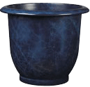
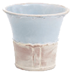

| Red Earth |
Thes ceramic pot is hand crafted from the finest materials so that each one is unique.
the pots are ccoated to increase durability. |
 |
| Night sky |
This glazed cermaic pot is availabe in lighter and darker shades. these are especially well suited to formal gardens. |
 |
| Country planner |
The more traditional look of this pot with its glaze design and decorate pattern will make it ideal for an informal outdoor setting. |
 |
| Chinese clay flower pot |
This imported pot stands a little over 40 cm in height.The sealed finish makes it suitable for outdoor use. |
 |
| Italian Terracotta |
a very traditional looking 20 cm high, pot with a narrow design, making it perfect for long stemmed flowers. |
 |
| Carved terracotta |
the carved design on this small pot can add some class to an entrance area or office setting. |
 |